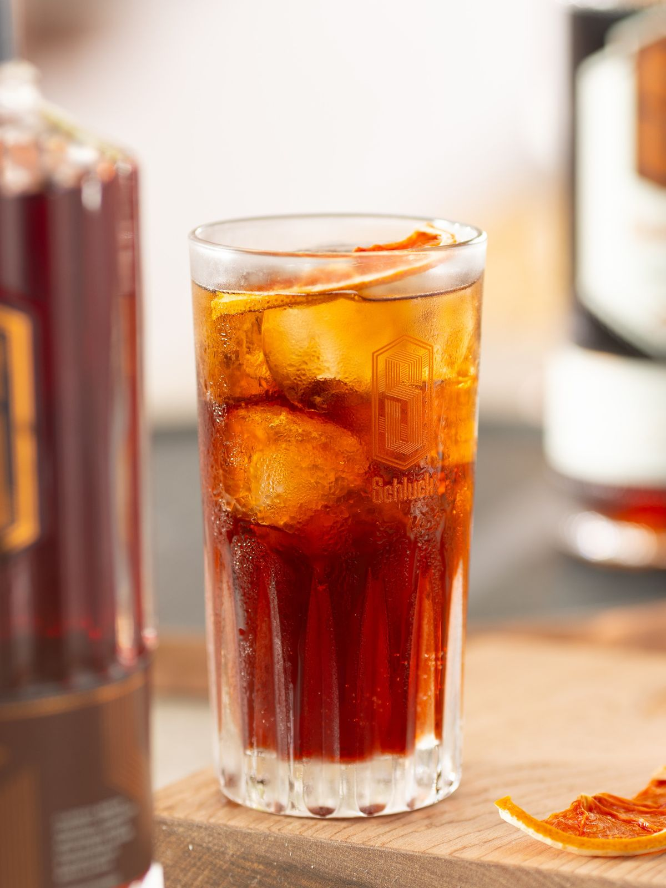
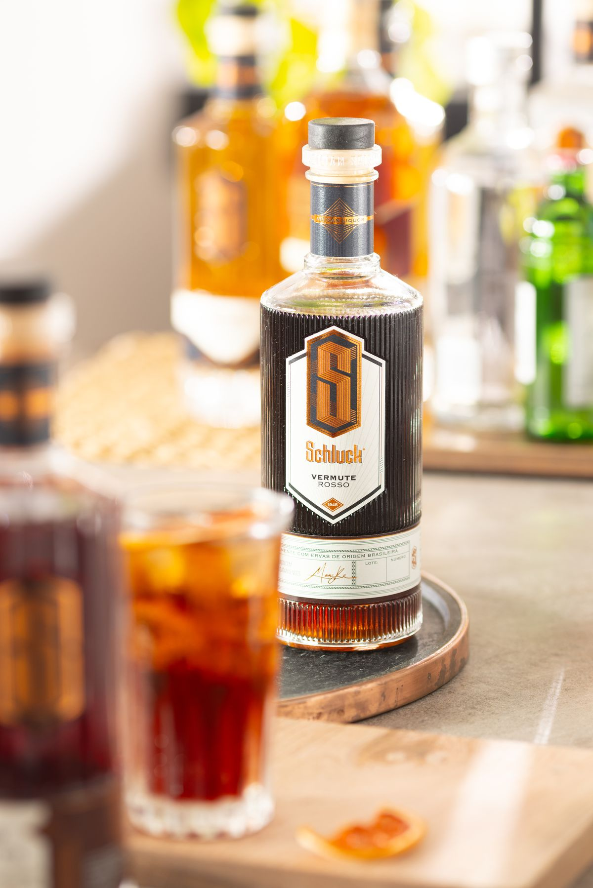
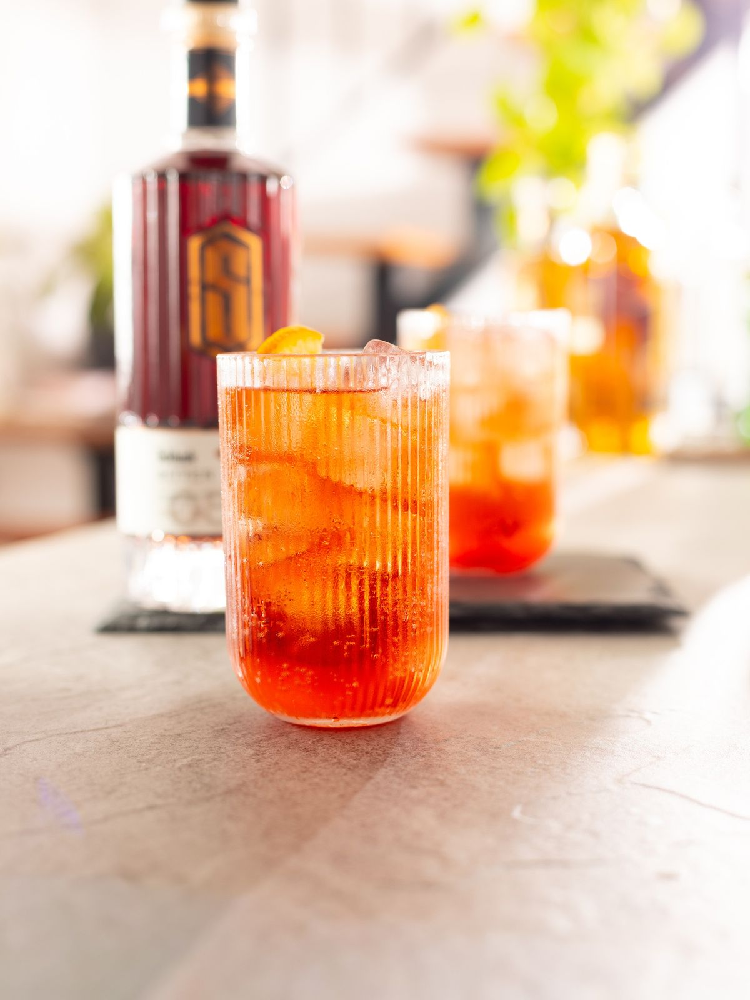
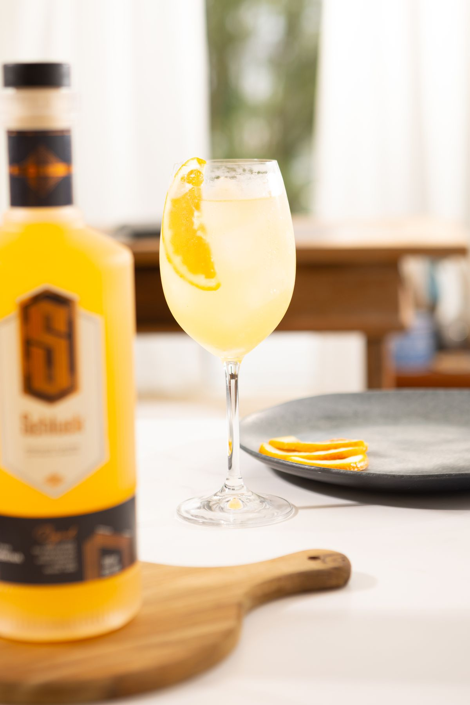
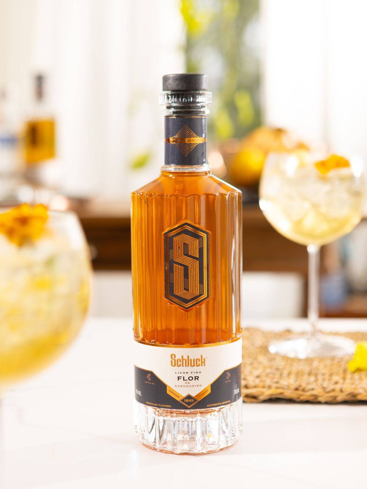
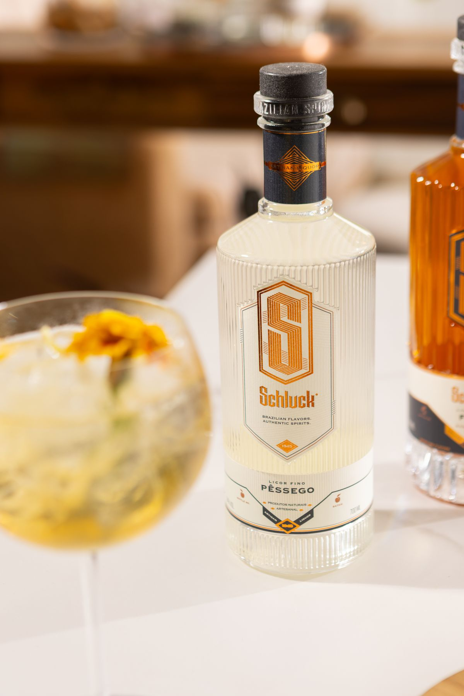
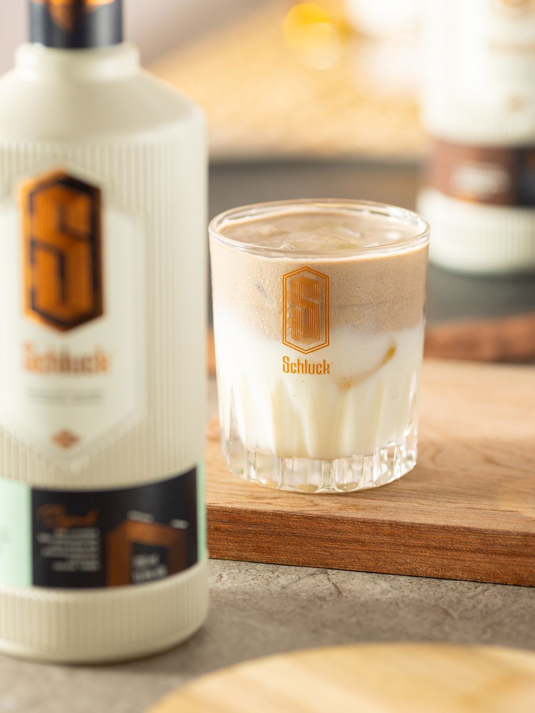
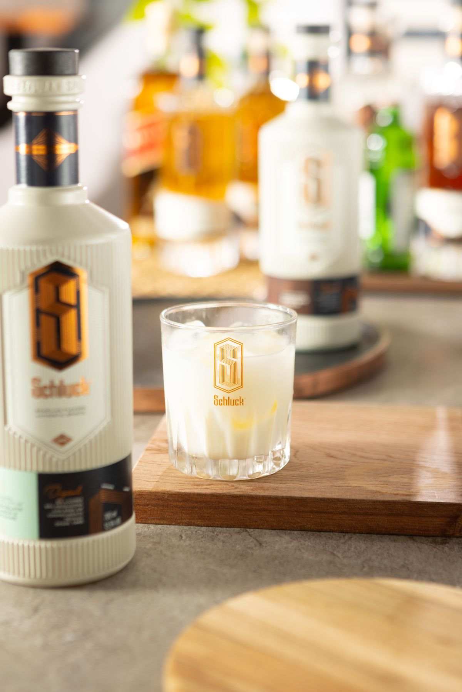
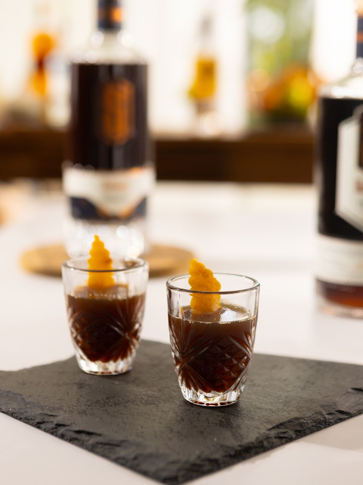
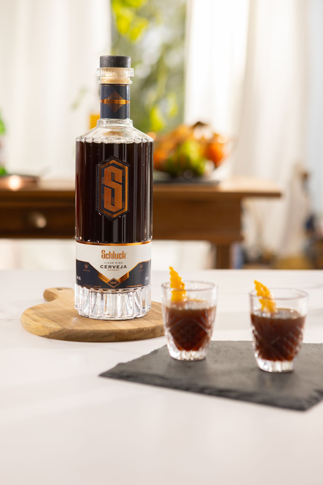

27 prêmios internacionais e quase oitenta anos de tradição entraram em cena numa produção desenhada do roteiro às imagens finais. Assinamos a direção de imagem, com luz, ângulo e sequência calculados pra sustentar o rótulo em qualquer formato: feed, painel eletrônico, letreiro gigante.
Luz e Cor — Vermute Rosso
O brinde pede um vermute com peso próprio. Vermute Rosso, ouro no Concours Mondial de Bruxelles, ganha profundidade na imagem com luz lateral calibrada pra acertar a cor exata do líquido, do âmbar ao vermelho escuro. Esse controle de cor vem de bastidor calibrado, quadro a quadro.


Pré-produção — Dry + Tangerina
Luz do dia, copo gelado. Vermute Dry e Tangerina abrem espaço pro spritz claro que foge do clichê noturno. A referência visual, luz natural e paleta clara, foi definida em pré-produção, antes da primeira foto sair.


Styling — Pêssego + Flor de Sabugueiro
Pêssego maduro e flor de sabugueiro enchem a taça de aroma de jardim. Cada flor comestível entra no quadro posicionada à mão, com o styling montado em bastidor pra taça carregar textura sem perder leveza.


Still + Vídeo — Cremes
Doce de leite, chocolate com avelã, cappuccino. Os licores cremosos viram sobremesa líquida numa sequência de still e vídeo planejada receita por receita: o cliente trouxe o roteiro, a produção coordenou cada corte até a edição final.


Entrega — Cappuccino + Cerveja Dunkel
A novidade chega em forma de licor de cerveja Dunkel, servido em doses curtas com casca de laranja. Still em alta resolução, still e vídeo coordenados na mesma produção, entrega pronta pra painel eletrônico ou ponto de venda: essa é a régua de quem entende que imagem de produto também é decisão de negócio.


Vídeo — A Produção em Movimento
Além do still, cada linha ganhou vídeo próprio, gravado na mesma produção e com a mesma direção de imagem.
"Imagem de produto também é decisão de negócio — do roteiro à entrega final."